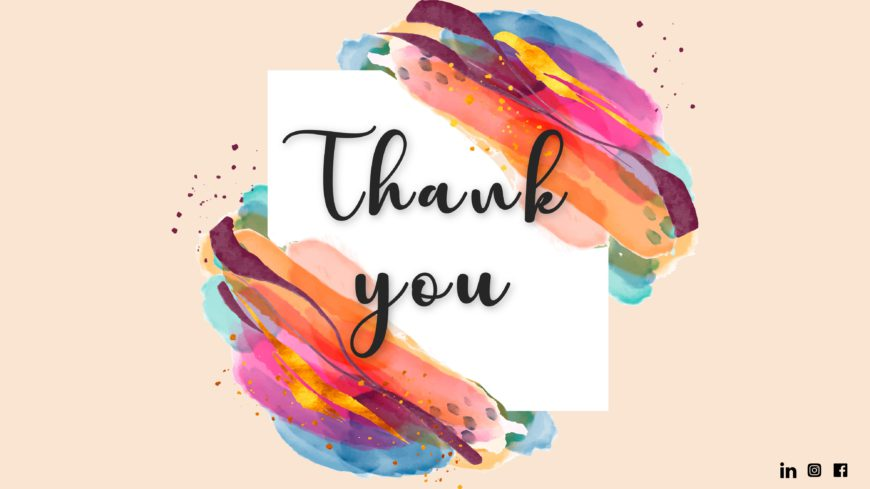

Welcome to English project
Ila Sachani
Ila Sachani , born without functioning hands , entered the world in a farming village in Amreli , Gujrat. Her life , unlike many others , was filled with unique challenges .
She couldn't use her hands in the usual ways.
Supported by her mother and grandmother , Ila learned to embroider with her feet .
Her families encouragement helped her become proficient in various embroidery styles , such as kathiwar , and she even mastered styles like kochi and Kashmiri from outside Gujrat .
Ila's incredible skills were recognized at a state exhibition leading to national recognition and awards.
Initially , she crafted beautiful designs solely for her family and friends , who were astounded by her talent .
Soon , the entire village was talking about Ila's special abilities and her work began to spread far and wide.
Eventually , word of her talent reached the government office at Surat , and officials were amazed by her work and thought highly of her dedication .
This experience gave Ila a new level of confidence about her work . She din't only received the awards for her cretivity but also for her willpower and dedecation.People observed the beauty woven by her feet and readily purchased them.
Ila Sachani , a girl who grew at a small village ..... facing many tough challenges,now is a celebrated artist by working hard and she is also a receiver of the President's Medal ....She proved , through her work , that challenges can be turned into vicotries with focus , hard work , positivity , and never giving up .

Ila Sachani

Back to Index
Ananya. Nalamwar